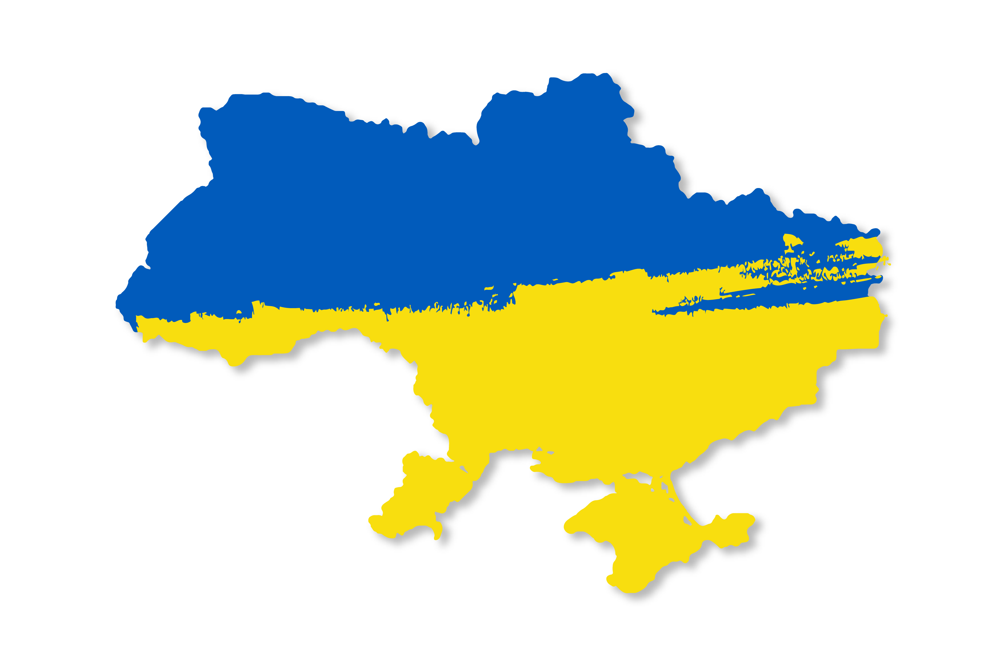

Як особисто я бачу майбутнє України:
Наші люди будуть креативними і проявляти відвагу, щоб досягти успіху разом з загальним прогресом світу.
Я вірю, що ми зможемо досягти вищої мережі освіти, щоб удосконалювати свої навички в нових галузях.
Держава буде працювати над підтримкою різних проектів, зокрема східних і західних інвестиційних проектів, щоб підтримати економічне зростання.
Також створення доступних програм для малої підприємницької діяльності і проектів, що призводять до розвитку культури, торгівлі і антикорупції, сприятиме поліпшенню життя наших громадян.
Майбутнє України - це багато обіцянок і мрій, а ми вже працюємо, щоб зробити їх реальністю.
Інше:

Карта України зараз
Які 4 дуже корисних технології можуть з'явитися в Україні в майбутньому на мою думку:
1 - Розумні доми: це будинки, обладнані системами інтелектуального управління, які можуть керувати світлом, температурою, водопостачанням та іншими системами.
Розумні доми також можуть забезпечувати безпеку, контролювати енергозбереження та підвищувати комфорт користувачів.
2 - Робототехніка: це технологія, що дозволяє створювати роботів, які можуть виконувати складні завдання та роботи, що можуть бути небезпечними для людей.
Робототехніка може знайти застосування в галузі медицини, будівництва, виробництва та інших галузях.
3 - Інтернет речей: це технологія, що дозволяє підключати різні пристрої до Інтернету та взаємодіяти з ними.
За допомогою Інтернету речей люди зможуть керувати своїми домашніми пристроями, віддалено керувати виробництвом та контролювати стан здоров'я.
4 - Технології блокчейн: це технології, що дозволяють зберігати та обмінювати дані безпечно та безпосередньо між користувачами.
Застосування блокчейн технологій можуть включати в себе цифрові гроші, голосування, управління постачанням та більше.
-

Будинок майбутнього (ззовні)
-

Робототехніка
-
Інтернет речей
-
Блокчейн